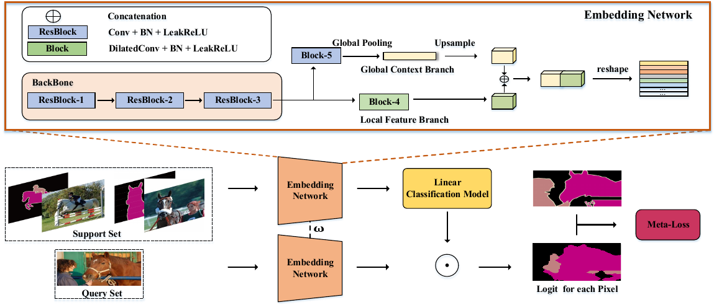
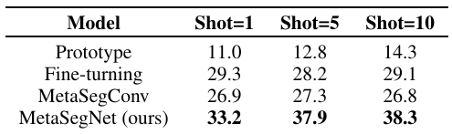
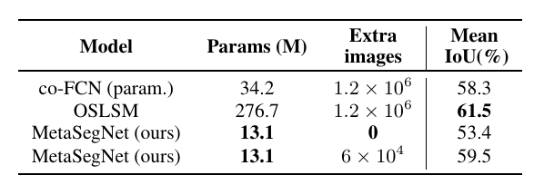

MetaSegnet
Summarization of metasegnet
Summary
While Existing methods on few-shot image segmentation focus on 1-way segmentation, this paper focuses on k-way segmentation tasks.
Existing Few-shot learning algorithms suffer from:
- Distribution Divergence: Most existing methods require to be pre-trained on ImageNet. However, there can be cases where the segmentation task might be very different from ImageNet.
- Hard to Extend: Most existing models perform few-shot segmentation by utilizing metric learning methods to measure one-to-one similarity between train and test images in the 1-way setting. Such methods cannot be directly adapted to the K-way setting
- Difficult to train: Existing methods employ complex embedding models which are hard to optimize.
What this paper proposes
- A new architecture called MetaSegNet
- A Linear base learner
- The model is capable of performing K-way N-shot semantic segmentation
- The model does this by extracting global and local information
- The model does not require any prior knowledge for performing the task
Model Architecture:

Figure showing the pipeline of MetaSegNet for 2-way semantic segmentation. The support set(Dtrain) is used to train a linear classification model, and meta-loss is used to train an embedding model(meta learner), which can generalize across all tasks. The novel embedding model branches to extract local and global features for pixel-level classification.
Embedding Network
The embedding network consists of two submodules— the feature extractor and the feature fusion module. Feature extractor extracts the local and global features whiles the feature fusion module fuses those features to perform the segmentation task.
- For the feature extraction module, a ResNet-9 architecture is used with some minor changes. To handle the conflicting demands of multi-scale reasoning and full-resolution dense prediction, the max-pooling layers behind blocks 3 and 4 and use dilated convolution. Also an additional branch is added to extract global context. Two max pooling layers are added ahead and behind block-5 to expand the receptive field.
- In the feature fusion module, the global feature is first unpooled to the same size as the local feature map spatially and then concatenated together. Since the two types of features have different scales and norms, l2 norm is applied in each channel for normalization. After normalization, combined feature map is reshaped to pixel feature map for pixel-wise classification(i.e segmentation)
Differentiable Linear Base Learner:
Why a linear base learner?
It is very difficult to calculate the analytic or optimal solution of the base learner if the base learner is a complex model with many non linearities in it. Such an assurance is required so as to ensure that the base learner is trained well, so as to train the meta learner well. Therefore, a differentiable linear model is chosen as the base learner.
$$\Lambda = \underset{w}{\operatorname{argmin}}| Xw - y |^{2} + \lambda |w|^{2} $$
where X is a pixel feature matrix obtained from the embedding network and y is the label for each pixel.
The closed form solution for this is as follows:
$$w = \big(X^TX +\lambda I \big)^{-1}X^Ty$$
This closed-form solution makes it easy to backpropagate through the meta-learning loss which is defined as:
$$\mathcal{L}^{meta}\left( \mathcal{D^{test}} ; w; \varphi, \lambda \right) = -\frac{1}{\left|\mathcal{T}\right|. \left|D_i^{test}\right|\left|\mathcal{I}\right|}\sum_{i \in \mathcal{T}}\sum_{(x,y) \in \mathcal{D_i^{test}}}\sum_{p \in \mathcal{I}}\log(S_{py_p})$$
where I is the set of pixels in the image and let $S_{pc}$ is the score of pixel $p$ in class $c$, then $S_{pc} = exp(s_{pc}) / \sum_{k=1}^{N} exp(s_{pk})$ represents the softmax probability of class $c$ at pixel $p$.
Experiments
- Datasets used: 2 datasets have been used — COCO and PASCAL VOC.
- Results:

Result on COCO dataset

Result on PASCAL-5i datasetAnurag Roy
pursuing PhD in Multimodal Machine Learning
My research interests include using of multimodal machine learning to analyze, recognize and predict human behaviour.